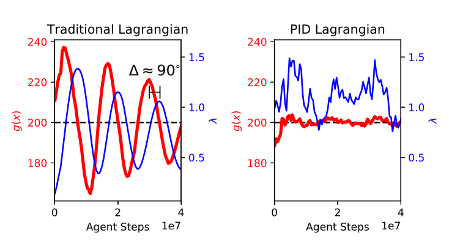
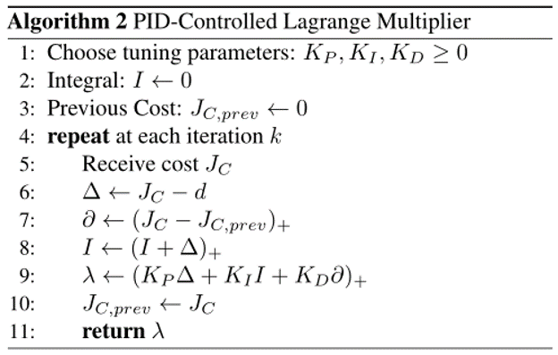
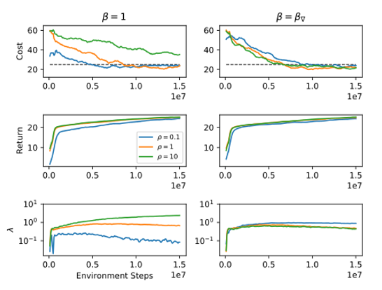

Responsive Safety in Reinforcement Learning by PID Lagrangian Methods
Introduction
Lagrangian methods are classical approaches to solving constrained optimization problems and have become popular baselines in deep RL for their simplicity and effectiveness. However, gradient Lagrangian methods for safe RL often lead to constraint violations in intermediate iterations. Our key insight is that the traditional Lagrange multiplier update amounts to integral control on the constraint. To address this deficiency, we expand the scope of possible Lagrange multiplier update rules by interpreting the overall learning algorithm as a dynamical system. Specifically, we employ proportional and derivative control, adding terms corresponding to derivatives of the constraint function. This novel approach results in a more responsive safety mechanism, reducing violations and improving safe RL performance.
Method
Lagrangian methods learning dynamics exhibit oscillations and overshoot which, when applied to safe reinforcement learning, leads to constraint-violating behavior during agent training.

To overcome the shortcomings of Lagrangian methods, add a Derivative term is a good choice. Then we can easily think of using PID(proportion integral derivative) method
As you can see, adding a Derivative term effectively reduces oscillations and overshoot. So next we will discuss how to combine Lagrangian methods and PID control method together
Feedback Control for Constrained RL
The general expression for a discrete-time feedback system which could be controlled by PID method is:
\[X_{k+1} = F(x_k, u_k)\]
\[y_k = Z(x_k)\]
\[u_k = h(y_0,..., y_k)\]
state vector is X, dynamic function F, measurement index y,
control signal u, and the subscript represents the time step.
feedback rule h knows all past and present measurements.
Assuming that the state vector of the control system is the parameter of the neural network, then we can write Constrained RL as the following first-order dynamic system:
\[\theta_{k+1} = F(\theta_k, \lambda_k)\]
\[y_k = J_c(\lambda_{\theta_k})\]
\[\lambda_k = h(y_0,..., y_k, d)\]
F can be written as the following linear system:
\[F(\theta_k, \lambda_k) = f(\theta_k) + g(\theta_k)\lambda_k\]
\[f(\theta_k) = \theta_k + \eta\bigtriangledown_\theta J(\pi_{\theta_k})\]
\[g(\theta_k) = -\eta\bigtriangledown_\theta J_c(\pi_{\theta_k})\]
This is actually just splitting the update formula of the Stochastic Gradient Descent algorithm into f and g.
\[\theta = \theta -\eta\bigtriangledown_\theta(J - \lambda J_c) \]
Algorithms
Now we introduce differential control and linear control, and directly get the algorithm of the following figure. Note that it is actually the introduction of both the differential term and the integral term of \(J_c\).

Implementation
Since PID method is a algorithm based on Tuning parameters, i choosed Safety-Gym CartPole environment, which allows me to train it quick and compare the result with different parameters
env = gym.make('CartPole-v0').unwrapped
Then i build a NN with 2 layers and 10 nuerons to calculate the loss
layer = tf.layers.dense(
inputs=self.tf_ob,
units=10,
activation=tf.nn.tanh,
kernel_initializer=tf.random_normal_initializer(mean=0, stddev=0.3),
bias_initializer=tf.constant_initializer(0.1),
name='fc1'
)
all_ac = tf.layers.dense(
inputs=layer,
units=self.n_actions,
activation=None,
kernel_initializer=tf.random_normal_initializer(mean=0, stddev=0.3),
bias_initializer=tf.constant_initializer(0.1),
name='fc2'
)
Then i used proportion term:
self.train_op = tf.train.AdamOptimizer(self.lr).minimize(loss)
integral term:
running_add = running_add * self.gamma + self.ep_reward[t]
Derivative term:
loss = tf.reduce_mean(self.Derivative * neg_log_prob * self.tf_v)
to calculate the loss and use softmax to convert the output into a probability, then choose an action according to the probability
Result
with the proper Implementation, the car make balance as expected
Undoubtedly, with reasonable parameter settings, the performance of the PID algorithm in terms of training speed and error fluctuation avoidance is superior to the traditional Lagrangian algorithm.
Problem unsolved
However, I cannot reproduce the images presented by the author in the article.

The PID algorithm is a parameter-tuning-based algorithm, while reinforcement learning is an algorithm that improves performance through multiple rounds of training. The author did not clarify under what conditions he made comparisons of different parameters. Was it the first round? Or after a fixed number of rounds? Or when good performance had already been achieved? In my opinion, comparing parameters without a fixed benchmark is not rigorous.